Layers
The Layers window shows all filters that have been applied to your image. The most recently applied filter is at the top of the stack, while the earlier applications are at the bottom. When you click on a thumbnail, the Viewer displays that layer.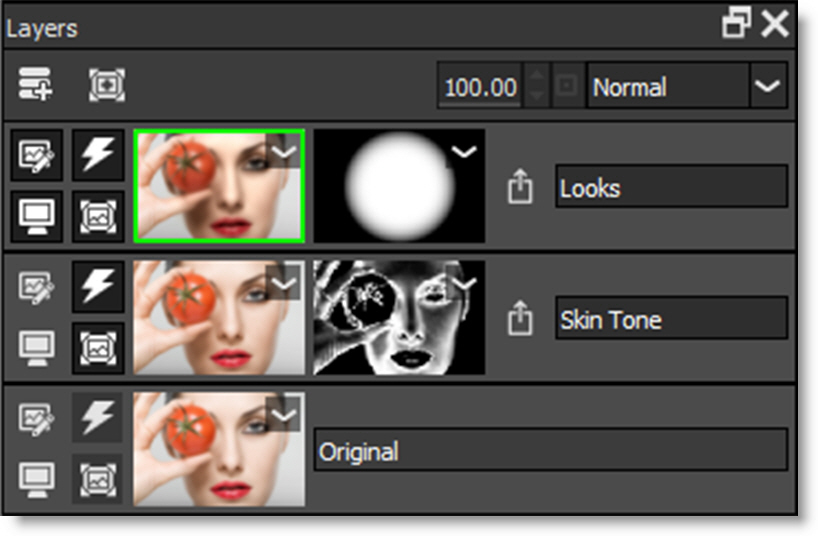
Layer Controls
Layer Name
Displays the Layer name. Just type in this field to rename the layer.
Layer Opacity
Sets the Layer’s opacity.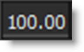
Layer Blend Mode
Layers can be combined with the layer below using a variety of Blend modes.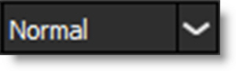
The following layer blend modes are available: Normal, Darken, Multiply, Color Burn, Linear Burn, Darker Color, Lighten, Screen, Color Dodge, Linear Dodge (Add), Lighter Color, Overlay, Soft Light, Hard Light, Vivid Light, Linear Light, Pin Light, Difference, Exclusion, Subtract, Hue, Saturation, and Color.
Go to Blend Modes for explanations of the various modes.
Add Layer (Ctrl/Cmd+L)
When a filter has been selected, pressing Add Layer applies the current filter to the image and creates a new layer.
Add Layer can also be used even if no filter is applied. This way Layer Blend Modes can be used to create effects between layers.
Add Mask
Adds a Mask to the current layer. Masks can be used to limit where a filter is applied to an image and are displayed to the right of the filter thumbnail.
See Masks for more information.
Edit
Clicking the Edit icon for a particular layer makes it active. Once active, you can adjust the filter settings or replace the current filter with a different one.
View/Compare
The View/Compare icon indicates which layer is shown in the Viewer and when enabled for multiple layers, the Viewer’s Side-by-Side, Vertical Split, Horizontal Split or A/B Comparison viewing modes become active. See the Compare section of the Viewer for more information.
Clicking on the image thumbnail in the Layers window automatically activates the View/Compare icon only for that layer and displays it in the Viewer.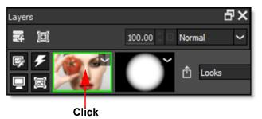
Enable Filter (D)
Enables/Disables the filter. A red X appears on the image thumbnail when disabled.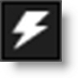
Enable Mask (Shift+D)
Enables/Disables all masks. A red X appears on the mask thumbnails when disabled.
Masks are used to limit where a filter is applied and are displayed to the right of the image thumbnail.
Export Masks
Masks are exported using a layer’s Export Masks icon visible to the right of the layer’s masks.
EZ Mask generates and renders masks at the current Preview Resolution unless a higher resolution is selected. This means that if you create a mask at any size other than full, it will be scaled up to the original image size when rendered, thus reducing quality. To export a high resolution mask, change the Preview Resolution to Full and regenerate the mask when prompted. You can then go back to the lower resolution since the mask was generated at full size.
Requirements for mask export:
• Photoshop: A layer mask is present.
• Lightroom: Exporting to PNG or TIFF files.
• Standalone: Saving to PNG or TIFF files.
To view the masks to be exported, select the layer whose Export Masks icon is enabled and press the M key.
Note: The masks will not be exported if a layer mask is not present in Photoshop or you don’t save/export to a PNG or TIFF file in the Standalone or Lightroom.
Layer Shortcuts
Shortcut | Action |
|---|---|
Ctrl/Cmd+L | Adds a new layer |
D | Toggle enable filter state |
Shift+D | Toggle enable mask state |
Using Layers, Filters and Masks
Context Menus
Layers
Click on the layer’s image thumbnail context menu to choose from a list of layer and mask actions.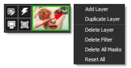
Masks
Click on the layer’s mask thumbnail context menu to choose from a list of mask actions.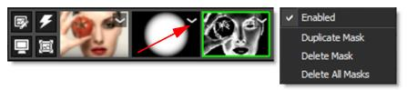
Adding Layers
• Click the Add Layer icon at the top left of the Layers window.
• Press the Ctrl/Cmd+L shortcut key.
• Double-click on a thumbnail in the Presets window.
• Right-click on the layer’s image thumbnail and select Add layer.
• Click on the layer’s image thumbnail context menu and select Add Layer.
Duplicating Layers / Masks
Layers
• Select Edit > Duplicate.
• Right-click on the layer’s image thumbnail and select Duplicate Layer.
• Click on the layer’s image thumbnail context menu and select Duplicate Layer.
Masks
• Right-click one of the layer’s mask thumbnails and select Duplicate Mask.
Disable Filters / Masks
Filters and masks can be disabled. Once disabled, a red X appears over the thumbnail.
Filters
Click the Enable Filter icon or press D to disable the filter.
Masks
All Masks
Click the Enable Mask icon or press Shift+D to disable all of the layer’s masks.
Single Mask
Click one of the layer’s mask thumbnail context menus and deselect Enabled to disable that mask.
Replacing Filters
Double-click on the layer’s image thumbnail to make it the active layer or click the Edit icon. Once active, you can replace the current filter with a different one.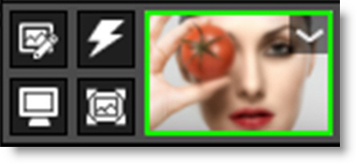
Note: You can tell visually which layer is active by the active layer’s green outline.
Deleting Filters
• Double-click on the layer’s image thumbnail and hit the Delete key.
• Right-click on the layer’s image thumbnail and select Delete Filter.
• Click on the layer’s image thumbnail context menu and select Delete Filter.
Deleting Masks
• Double-click on the layer’s mask thumbnail and hit the Delete key.
• Right-click one of the layer’s mask thumbnails and select Delete Mask to delete that mask or Delete Masks to delete all masks for the selected layer.
• Click one of the layer’s mask thumbnail context menus and select Delete Mask to delete that mask or Delete Masks to delete all masks for the selected layer.
Deleting Layers
• Right-click on the layer’s image thumbnail and select Delete Layer. Delete Layer is only available when a layer has been added in the Layers window.
• Click on the layer’s image thumbnail context menu and select Delete Layer.
Drag and Drop Layers
The ordering of layers can be changed by dragging and dropping them to a new location.
Click and drag on the gray area above or below the layer’s name and then release the mouse in the new location.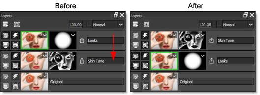
When the mouse button is released, the layer is moved to the new location.
Drag and Drop Filters and Masks
Replacing Filters
Filters from one layer can replace another layer using drag and drop.
Click the layer’s image thumbnail that you want to copy, drag it over the image thumbnail that you want to replace, and release the mouse when a red outline appears and the cursor changes to a + sign.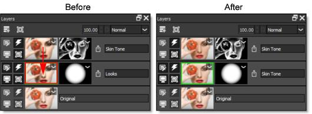
When the mouse button is released, the destination filter is replaced with the source filter.
Replacing Masks
Masks can be replaced using drag and drop.
Click a mask, drag it over the mask you want to replace and when a red outline appears along with a + cursor, release the mouse.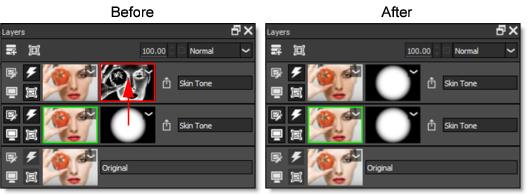
When the mouse button is released, the destination mask is replaced with the source mask.
Moving Masks
Within a layer, the order of masks can be changed.
Click a mask, drag it between two other masks or to the edge of the last mask and when a red vertical bar appears along with an arrow icon, release the mouse.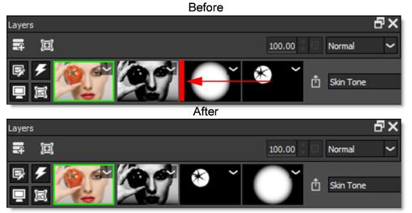
The mask is moved to the new location.
Copying and Inserting Masks
Masks can be copied/inserted using drag and drop.
Click a mask, drag it to an open area of a layer or between masks on another layer and when a + cursor appears, release the mouse to copy/insert it.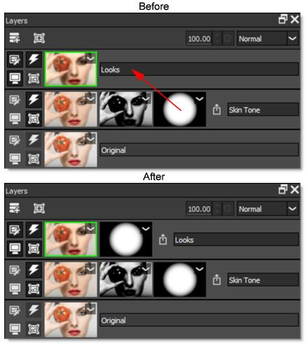
The mask is copied to the new location.